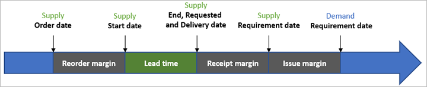
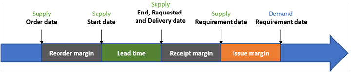
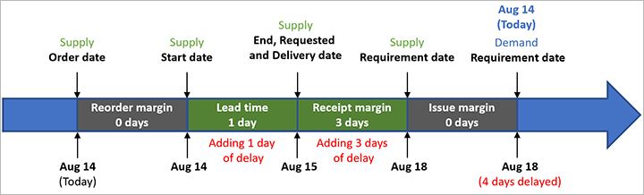

Sicherheitszuschläge
Important
Dynamics 365 for Finance and Operations hat sich zu speziell entwickelten Anwendungen entwickelt, mit denen Sie bestimmte Geschäftsfunktionen verwalten können. Weitere Informationen zu diesen Änderungen finden Sie im Dynamics 365-Lizenzierungshandbuch.
In diesem Thema wird beschrieben, wie Sicherheitsmargen mit dem Planning Optimization Add-In für Microsoft Dynamics 365 Supply Chain Management verwendet werden können.
Übersicht über die Sicherheitszuschläge
Der Zweck von Sicherheitsmargen besteht darin, eine Einrichtung zu ermöglichen, die eine Pufferzeit bietet, die über die normale Vorlaufzeit hinausgeht. Wenn beispielsweise Material ausgepackt oder geprüft werden muss, nachdem es vom Lieferanten eingegangen ist, können Sie nicht einfach die zusätzliche Zeit zur Vorlaufzeit des Kaufs hinzufügen, da dieser Ansatz dem Lieferanten die zusätzliche Pufferzeit gibt. In diesem Beispiel kann der Sicherheitszuschlag für Warenzugang verwendet werden, um sicherzustellen, dass der Lieferant früher liefert. Dieser Ansatz bietet Pufferzeit, damit die Waren intern gehandhabt werden können.
Es gibt drei Typen von Sicherheitszuschlägen:
- Sicherheitszuschlag für Wiederbestellung – Die Pufferzeit zum Tätigen des Lieferungsauftrags
- Sicherheitszuschlag für Warenzugang – Die Pufferzeit für die Bearbeitung der eingehenden Lieferung
- Sicherheitszuschlag für Warenabgang – Die Pufferzeit für die Abwicklung von Sendungen
Die folgende Abbildung zeigt, wie diese Sicherheitszuschläge im Laufe der Zeit gelten.

Alle Zuschläge werden in Tagen definiert. Der Standardwert von 0 (Null) gibt an, dass der kein Zuschlag angewendet wird. Wenn Sie mehrere Zuschläge einrichten, addieren sich alle zur Gesamtzeit ab Lieferung Auftragsdatum auf die Nachfrage Anforderungsdatum. Beispielsweise hat eine Einrichtung keine Vorlaufzeit und alle drei Zuschlagstypen sind auf einen Tag festgelegt. In diesem Fall liegen zwischen dem Bestelldatum der Lieferung und dem Datum der Bedarfsanforderung drei Tage. Wenn das Bestelldatum also der 1. Juli ist, ist das Anforderungsdatum der 4. Juli.
Sicherheitszuschlag für Warenzugang
Die Sicherheitszuschlag für den Warenzugang ist wahrscheinlich die am häufigsten verwendete der drei Sicherheitszuschläge. Er wird auf das Lieferdatum und rückwirkend vom Anforderungsdatum angewendet. Mit anderen Worten, die Produkte sollten die angegebene Anzahl von Tage für den Sicherheitszuschlag für den Warenzugang erhalten, bevor sie benötigt werden.
Die folgende Abbildung zeigt den Sicherheitszuschlag für den Warenzugang.

Der Sicherheitszuschlag für den Warenzugang wird normalerweise als Puffer verwendet, um die Zeit für die Lagerregistrierung oder andere zeitaufwändige Prozesse sicherzustellen, die nicht als Teil der allgemeinen Vorlaufzeit im System erfasst werden. Für Einkäufe ist ein Vorteil, dass das Lieferdatum der Bestellung entsprechend nach vorne geschoben wird. Wenn Sie die Vorlaufzeit verlängern, anstatt einen Sicherheitszuschlag zu verwenden, wird der Anbieter weiterhin gebeten, in letzter Minute zu liefern.
Beachten Sie, dass der Sicherheitszuschlag für den Warenzugang das Anforderungsdatum der Lieferung nicht ändert. Daher ist der Sicherheitszuschlag für den Warenzugang nicht direkt sichtbar, wenn Anforderungsdaten für Angebot und Nachfrage verglichen werden (z. B. auf der Nettobedarf-Seite). Wenn beispielsweise der Sicherheitszuschlag für den Warenzugang auf vier Tage geplant ist und eine Bestellposition für den Zugang am Fünfzehnten des Monats geplant ist, wird im Produktprogrammplanungslauf das angepasste Wareneingangsdatum als der 19. des Monats berechnet.
Beachten Sie, dass kein Sicherheitszuschlag für den Warenzugang angewendet wird, wenn der Lagerbestand als Lieferung verwendet wird. Es wird davon ausgegangen, dass das gesamte vorhandene Bestand sofort verfügbar ist, unabhängig davon, wann er tatsächlich eingegangen ist.
Sicherheitszuschlag für Wiederbestellung
Note
Bald verfügbar: Diese Funktion wird für die Planungsoptimierung noch nicht unterstützt. Bis sie unterstützt wird, werden alle eingegebenen Werte für Zur Artikelvorlaufzeit hinzugefügter Sicherheitszuschlag für Wiederbestellung als 0 (Null) behandelt.
Die folgende Abbildung zeigt den Sicherheitszuschlag für den Wiederbestellung.

Der Sicherheitszuschlag für die Wiederbestellung wird bei Produktplanung für alle Bestellvorschläge vor der Vorlaufzeit des Artikels hinzugefügt. Dadurch wird zusätzliche Zeit für die Bestellung eines Lieferauftrags sichergestellt. Dieser Zuschlag wird normalerweise als Puffer verwendet, um Zeit für Genehmigungsprozesse oder andere interne Prozesse zu gewährleisten, die bei der Erstellung von Lieferaufträgen erforderlich sind. Der Sicherheitszuschlag für den Wiederbestellung wird zwischen das Auftragsdatum und Anfangsdatum des Angebots gesetzt.
Sicherheitszuschlag für Warenabgang
Note
Bald verfügbar: Diese Funktion wird für die Planungsoptimierung noch nicht unterstützt. Bis zur Unterstützung werden alle eingegebenen Werte für Vom Anforderungsdatum abgezogener Sicherheitszuschlag für Warenabgang als 0 (Null) behandelt.
Die folgende Abbildung zeigt den Sicherheitszuschlag für den Warenabgang.

Der Sicherheitszuschlag für Warenabgang wird bei der Produktplanung vom Bedarfsanforderungsdatum abgezogen. Dies hilft sicherzustellen, dass Sie Zeit haben, um auf eingehende Nachfrageaufträge zu reagieren und diese zu versenden. Dieser Zuschlag wird normalerweise als Puffer verwendet, um die Zeit für den Versand und die damit verbundenen ausgehenden Lagerprozesse sicherzustellen.
Beachten Sie, dass bei Anwendung eines Sicherheitszuschlag für Warenabgang die entsprechenden Angebots- und Nachfragedaten nicht übereinstimmen. Stattdessen unterscheiden sie sich durch den Sicherheitszuschlag für Warenabgang, da der Sicherheitszuschlag für Warenabgang zwischen dem Anforderungsdatum des Angebots und dem Anforderungsdatum der Nachfrage hinzugefügt wird.
Sicherheitszuschläge einrichten
Aktivieren Sie die Sicherheitszuschläge in der Funktionsverwaltung
Bevor Sie diese Funktion mit der Planungsoptimierung nutzen können, muss sie auf Ihrem System aktiviert werden. Administratoren können mit der Einstellung Funktionsverwaltung den Status der Funktion überprüfen und ggf. aktivieren. Dort wird die Funktion folgendermaßen aufgelistet:
- Modul: Produktprogrammplanung
- Funktionsname: Zuschläge für die Planungsoptimierung
Sicherheitszuschläge definieren
Sicherheitszuschläge sind flexibel aufgebaut. Sie können auf der Dispositionssteuerungsgruppe und auf der Produktprogrammplanung festgelegt werden. Es ist wichtig, dass Sie verstehen, dass die Zuschläge kumulativ hinzugefügt werden. Beispielsweise führt ein Sicherheitszuschlag für den Warenzugang von zwei Tagen für die Dispositionssteuerungsgruppe und drei Tagen für die Produktprogrammplanung zu einem effektiven Sicherheitszuschlag für den Warenzugang von fünf Tagen.
Die Möglichkeit, den Zuschlag in der Produktprogrammplanung festzulegen, kann hilfreich sein, wenn Sie längere Vorlaufzeiten oder Unsicherheiten für einen bestimmten Plan simulieren möchten, ohne jedoch die tägliche Planung zu beeinträchtigen.
Sicherheitszuschläge für Dispositionssteuerungsgruppen
Führen Sie diese Schritte aus, wenn Sie einen Sicherheitszuschlag auf eine Dispositionssteuerungsgruppe anwenden.
Gehen Sie zu Produktprogrammplanung > Einrichtung > Dispositionssteuerungsgruppen.
Wählen Sie im Listenbereich die gewünschte Dispositionssteuerungsgruppe aus.
Verwenden Sie im Inforegister Andere im Abschnitt Sicherheitszuschläge in Tagen die folgenden Felder, um die erforderlichen Sicherheitszuschläge (in Tagen) festzulegen:
- Zum Bedarfsdatum hinzugefügter Sicherheitszuschlag für Warenzugang
- Vom Bedarfsdatum abgezogener Sicherheitszuschlag für Warenabgang
- Sicherheitszuschlag für Wiederbestellung, der zur Durchlaufzeit eines Artikels addiert wird
Sicherheitszuschläge der Produktprogrammplanung
Führen Sie diese Schritte aus, wenn Sie einen Sicherheitszuschlag auf die Produktprogrammplanung anwenden.
Wechseln Sie zu Produktprogrammplanung > Einrichtung > Pläne > Produktprogrammpläne.
Wählen Sie im Listenbereich den gewünschten Produktprogrammplan aus.
Verwenden Sie im Inforegister Sicherheitszuschläge in Tagen die folgenden Felder, um die erforderlichen Sicherheitszuschläge (in Tagen) festzulegen:
- Zum Bedarfsdatum hinzugefügter Sicherheitszuschlag für Warenzugang
- Vom Bedarfsdatum abgezogener Sicherheitszuschlag für Warenabgang
- Sicherheitszuschlag für Wiederbestellung, der zur Durchlaufzeit eines Artikels addiert wird
Definieren Sie, ob Berechnungen auf Kalendertagen oder Arbeitstagen basieren
Sie können alle Sicherheitsmargen so einstellen, dass sie entweder anhand von Kalendertagen oder Arbeitstagen berechnet werden.
- Wechseln Sie zu Produktprogrammplanung > Einrichtung > Produktprogrammplanparameter.
- Stellen Sie auf der Allgemeines-Registerkarte im Sicherheitszuschläge in Tagen-Abschnitt die Arbeitstage-Option auf Ja, um Zuschläge basierend auf Arbeitstagen zu berechnen. Setzen Sie die Option auf Nein, um Zuschläge basierend auf Kalendertagen zu berechnen.
Beispielsweise ist ein Kalender von Montag bis Freitag geöffnet und von Samstag bis Sonntag geschlossen. Wenn es einen Sicherheitszuschlag für den Warenzugang von einem Tag gibt, ergibt ein Anforderungstermin an einem Montag einen Liefertermin am vorherigen Freitag, da Samstag und Sonntag keine Arbeitstage sind.
Der Kalender, der zur Bestimmung der Arbeitstage verwendet wird, hängt von der Einrichtung und der Versorgungsart ab. Er kann über die Kalender der Dispositionsgruppe, des Lagerorts und des Lieferanten gesteuert werden.
Note
Wenn Lagerort ist nicht Teil der Deckungsdimension ist (mit anderen Worten, die Planung basiert nur auf Site), wird der Lagerkalender nicht verwendet.
Das System kann eine Einrichtung verarbeiten, bei der ein oder mehrere Kalender definiert sind. In den folgenden Unterabschnitten werden die möglichen Kombinationen beschrieben, mit denen das Ergebnis gesteuert werden kann.
Kalender, der für die Dauer verwendet wird
Die definierten Kalender steuern die tatsächliche Gesamtvorlaufzeit in Kalendertagen vom Lieferauftragsdatum bis zum Bedarfsanforderungsdatum. Die folgende Kalenderpriorisierung wird verwendet:
- Lieferzeit Einkauf – Es wird nur der Dispositionssteuerungsgruppekalender berücksichtigt.
- Sicherheitszuschlag für Warenzugang – Der Dispositionssteuerungsgruppenkalender wird verwendet, sofern er definiert ist. Andernfalls wird der Lagerkalender verwendet.
- Sicherheitszuschlag für Warenabgang – Der Dispositionssteuerungsgruppenkalender wird verwendet, sofern er definiert ist. Andernfalls wird der Lagerkalender verwendet.
- Sicherheitszuschlag für Bestellung – Es wird nur der Dispositionssteuerungsgruppekalender berücksichtigt.
Kalender, der für das Enddatum verwendet wird
Die folgenden Regeln werden angewendet, um zu bestimmen, ob das Planungsmodul ein bestimmtes Datum für einen bestimmten Datumstyp verwenden kann:
- Kaufeingangsdatum – Der Lieferantenkalender wird verwendet, sofern er definiert ist. Andernfalls wird der Dispositionssteuerungsgruppenkalender verwendet, sofern er definiert ist. Wenn keiner dieser Kalender definiert ist, wird der Lagerkalender verwendet.
- Übertragungseingangsdatum – Der Dispositionssteuerungsgruppenkalender wird verwendet, sofern er definiert ist. Andernfalls wird der Lagerkalender verwendet.
- Produktionseingangsdatum – Der Dispositionssteuerungsgruppenkalender wird verwendet, sofern er definiert ist. Andernfalls wird der Lagerkalender verwendet.
- Öffnungstag des Bedarfabgangs – Der Lagerkalender wird verwendet, sofern er definiert ist. Andernfalls wird der Dispositionssteuerungsgruppenkalender verwendet.
- Tag der Bestellungsöffnung – Es wird eine Kombination (ein Schnittpunkt) des Dispositionssteuerungsgruppenkalenders und des Lieferantenkalenders verwendet. Beide Kalender müssen geöffnet sein, um das Datum zu verwenden. Wenn nur einer der Kalender definiert ist, wird nur dieser Kalender verwendet.
Übersichtsmatrix für die Kalendereinrichtung
Die folgende Abbildung zeigt eine Matrix, die zusammenfasst, welche Kalender bei der Berechnung der Sicherheitszuschläge gelten. (Wählen Sie das Bild aus, um eine hochauflösende Version davon zu öffnen.) Die folgenden Abkürzungen und Farben geben an, wo die einzelnen Kalendertypen angegeben sind:
- Dispositionssteuerungsgruppe (CG): Grün
- Lagerort (WH): Gelb
- Lieferant (V): Blau

Berechnungstage
Alle drei Arten von Sicherheitszuschlägen werden berücksichtigt, wenn das System feststellt, ob sich eine Bestellung verzögert ist.
Beispielsweise hat ein Artikel eine Vorlaufzeit von einem Tag und einen Sicherheitszuschlag für den Warenzugang von drei Tagen. Ein Auftrag für diesen Artikel wird heute wie erforderlich festgelegt. In diesem Fall wird die Verzögerung als Vorlaufzeit + Sicherheitszuschlag für den Warenzugang = vier Tage berechnet. Wenn also heute der 14. August ist, führen die vier Tage Verzögerung zu einer Lieferung am 18. August. Die folgende Abbildung zeigt dieses Beispiel.
